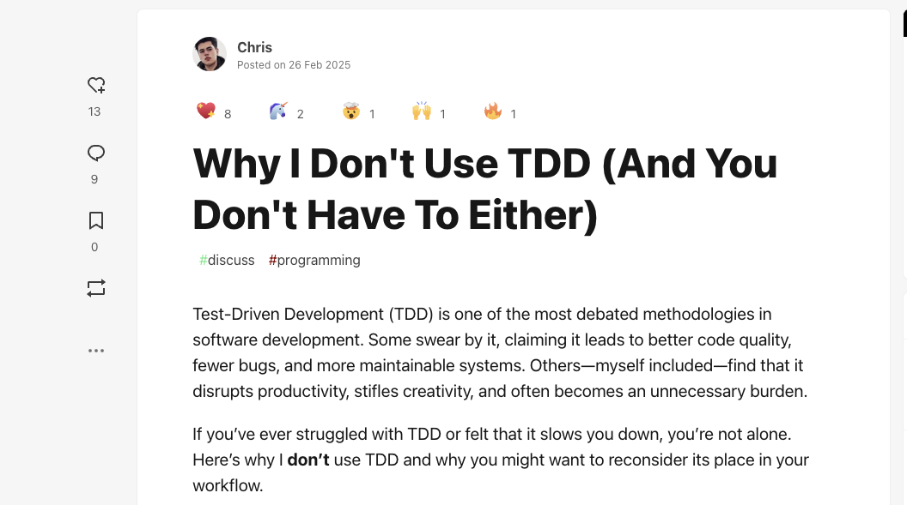
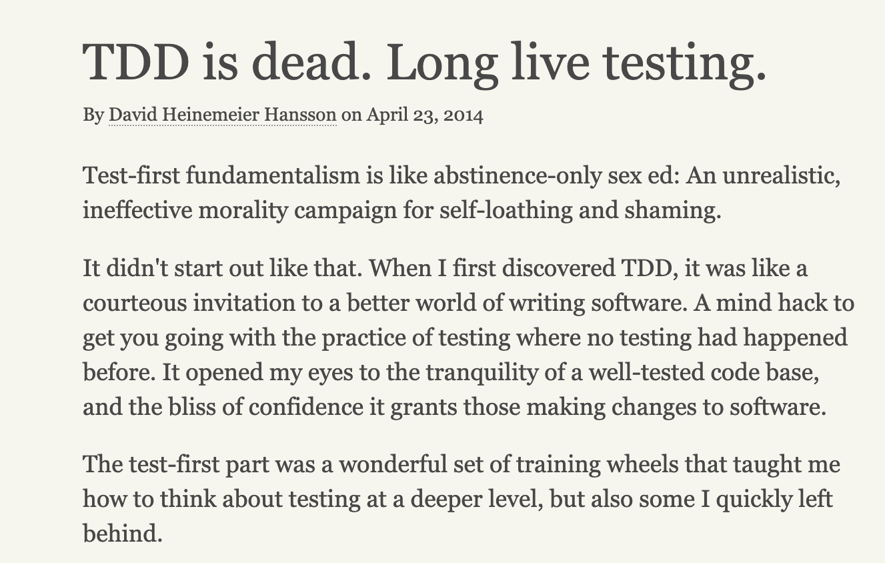
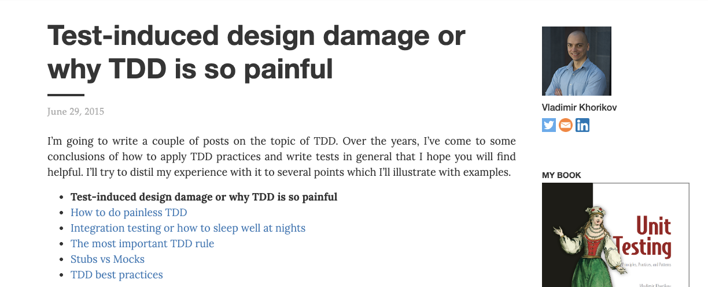
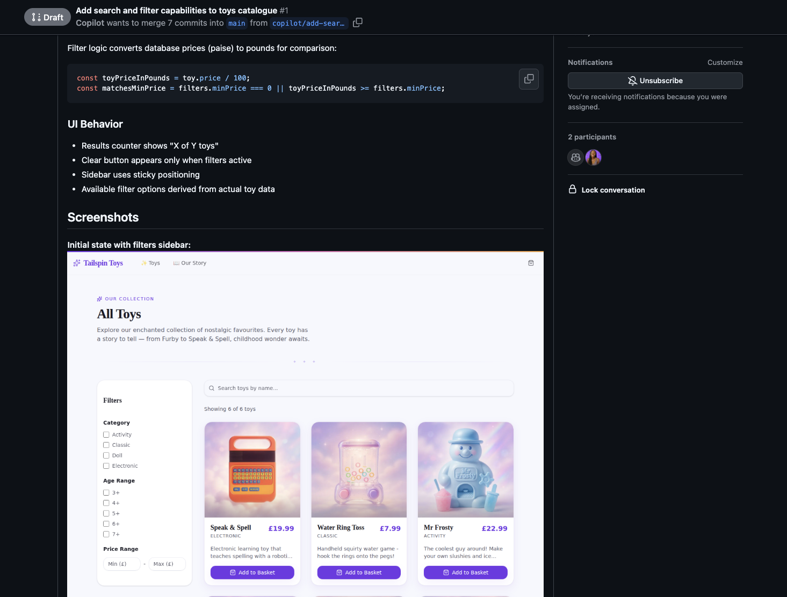

Beyond Code Coverage: Functionality Testing with Playwright
Marlene Mhangami
Senior Developer Advocate · Microsoft
aka.ms/ai-eng-playwrightMore Code Is Being Created
Does AI Make Developers More Productive?
Clean Code Amplifies AI Gains

Source: “Can you prove AI ROI in Software Eng?” — Yegor Denisov-Blanch, Stanford · AI Engineer 2025
Priorities for AI-Assisted Teams

Source: “Can you prove AI ROI in Software Eng?” — Yegor Denisov-Blanch, Stanford · AI Engineer 2025
How can developers create and maintain clean code?
Test Driven Development (TDD)
TDD Is Dead



Mocks break on refactoring, not real bugs
Evolving requirements make tests throwaway work
Red → green → refactor breaks flow state
Visual code must exist before it can be tested
How AI & Playwright Will Resurrect TDD
Red/Green TDD
Test Behaviours, Not Implementations
Focus on feature requests, not class methods
- Don't test a method on a class — test what the system does
- Write tests for the public API & observable behaviour (BDD)
- Tests should survive any refactor of internals without breaking
- Avoid mocks that couple tests to implementation details
“We are not testing a method on a class — we are testing a behaviour of the system.”
— Ian Cooper, TDD Where Did It All Go Wrong
AI Drives Red → Green
Use AI + Playwright to cycle fast
- Describe the feature — let AI write the failing Playwright test
- Let AI generate just enough code to make it pass
- Playwright tests real browser behaviour, not implementation details
- The machine handles the mechanical cycle — you stay focused

Refactor by Hand, Deliberately
This is your design thinking time
- Do not write new tests here — only safe structural moves
- Remove duplication, eliminate code smells, apply patterns
- Your original behaviour test keeps you safe while you reshape the code
- This is how you prevent AI-generated code from becoming technical debt
“Refactoring is changing the implementation details without breaking tests — yet our tests were breaking all the time.”
— Ian Cooper, TDD Where Did It All Go Wrong
Playwright for functionality first, agentic testing
What is Playwright?
The Library
- Open source testing library by Microsoft
- Automates end-to-end testing in real browsers
- Simulates real user interactions
- Web browser based — tests what users actually see
Two Ways to Use Playwright With Agents
1. Playwright MCP Server
2. Playwright Agents
Playwright MCP Server
Natural Language → Tests
Describe a flow, generate test scaffolding without writing code.
Browser Automation
Drive pages, forms, navigation and interactions programmatically.
Screenshot Testing
Capture visual proof for verification and PR review.
⚠️ Manual test fixing is still required — generated tests need review before committing.
Playwright MCP Demo
Playwright Agents
🗺 Planner
- Creates the test plan
- Understands your app structure
- Uses seed files & utilities
- Respects existing code patterns
✍️ Generator
- Writes tests based on plans
- One test per file (recommended)
- Verifies elements before writing
- Uses test logs to prevent hallucination
🩺 Healer
- Runs tests in debug mode
- Reads console errors & API responses
- Adds
FIXMEfor app-side bugs - Commits before healing recommended
Getting Started
Bootstrap in one command
npx playwright init-agents --loop=vscode
- Generates an
agents/folder - Creates VS Code MCP configuration
- Adds a seed spec file to start from
Best Practices
- Use headless mode for multitasking
- Enable Auto Approve for efficiency
- Commit before running the Healer
- Generate tests section by section
Beyond Code Coverage
Key Takeaways
- More AI output only helps when code quality stays high
- TDD and behavior-focused tests keep AI output trustworthy
- Playwright helps verify real functionality end-to-end
- Focused PRs with test evidence improve outcomes